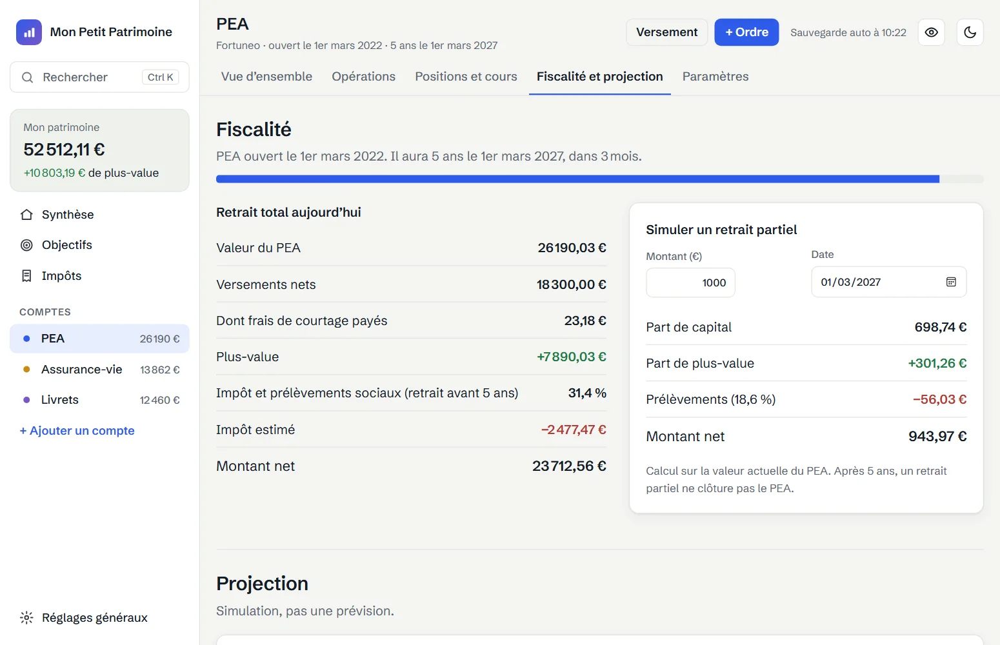

Le suivi de patrimoine qui reste sur votre ordinateur
Mon livret A me faisait perdre de l’argent. Je ne le savais pas.
Ce simple calcul m’a décidé à construire mon patrimoine, puis à créer l’outil que je ne trouvais nulle part pour le suivre : tout au même endroit, sans compte, sans donner mes identifiants bancaires.
Sur votre téléphone ?
L’application s’installe sur un ordinateur, Windows ou Mac. Recevez le lien par e-mail pour l’installer ce soir, et voyez dès maintenant à quoi elle ressemble.
Voir la démo sur mon téléphone
Votre adresse sert seulement à vous envoyer ce lien, sauf si vous cochez la case de la newsletter.
Windows 10 et 11 (64 bits) · macOS 12 ou plus récent · 30 jours complets, sans carte bancaire · licence à vie : 19 € jusqu’au 31 décembre 2026

Le calcul qui a tout changé
J’avais l’impression d’épargner. En réalité, je perdais près de 300 € de pouvoir d’achat. Aucun relevé ne me le disait. J’ai tout expliqué, chiffres et sources à l’appui, dans un guide gratuit →
Ce que je cherchais, sans le trouver
Après le déclic, je me suis formé, j’ai ouvert un PEA, puis une assurance-vie, en gardant mes livrets. Très vite, j’avais des comptes partout mais aucune réponse simple à deux questions : combien j’ai en tout et combien ça m’a vraiment rapporté ?
- Un fichier Excel. Il a tenu quelques mois. Puis les formules ont cassé. Je ne l’ouvrais plus.
- Les applications en ligne. Elles voulaient mes identifiants bancaires et gardaient tout sur leurs serveurs. Pas pour moi.
- Ce que je voulais : une application simple, qui fasse les calculs justes et laisse mes chiffres sur mon ordinateur. Alors je l’ai construite.
Comment je m’en sers, concrètement
Quand j’achète des parts de mon ETF
Je note l’ordre en quelques secondes. Le cours se met à jour tout seul. Je vois mon rendement par an, calculé avec la date de chaque versement : pas le simple « +12 % » du relevé.

Quand je reçois le relevé de mon assurance-vie
Je recopie le fonds euros et le nombre de parts. Ensuite, l’estimation avance seule : versements programmés, frais de gestion, intérêts. Au relevé suivant, je vois l’écart, support par support.

Une fois par mois, pour mes livrets
Je mets à jour le solde. Les intérêts sont estimés par quinzaine, aux taux officiels. L’application me prévient quand un livret approche de son plafond.

Avant de retirer de l’argent
Je regarde ce qui me resterait vraiment après impôts et prélèvements sociaux, puis la date à laquelle mon PEA aura 5 ans. Attendre quelques mois peut faire économiser des centaines d’euros.

Comparé à ce que j’ai essayé
| Un tableur | Une application en ligne | Mon Petit Patrimoine | |
|---|---|---|---|
| Mise en place | Longue, à construire soi-même | Rapide, comptes synchronisés | Quelques minutes, démarrage guidé |
| Rendement par an, fiscalité | Si vous écrivez les formules | Selon l’offre | Calculés pour vous |
| Vos données | Chez vous ou dans le cloud | Sur les serveurs du service | Sur votre ordinateur |
| Sur le téléphone | Selon l’outil | Oui | En lecture seule, chiffré de bout en bout, si vous le voulez |
| Identifiants bancaires | Non | Oui | Jamais |
| Synchronisation bancaire | Non | Oui | Non : vous saisissez, ou importez l’historique de votre banque |
| Tarif | Gratuit | Souvent un abonnement | 19 € une fois, licence à vie (jusqu’au 31 décembre 2026) |
Ce que l’application ne fait pas
Autant le dire tout de suite.
- Elle ne se connecte pas à votre banque : vous saisissez vos opérations, ou vous importez l’historique exporté par votre banque.
- Elle s’installe sur Windows et sur Mac. Sur le téléphone, la Synthèse se consulte en lecture seule : la saisie se fait sur l’ordinateur.
- Elle ne vous dit pas quoi acheter. Elle vous montre où vous en êtes.
- Elle n’est pas signée : Windows et macOS affichent un avertissement à la première ouverture (pourquoi).
Des mises à jour régulières
Comprises dans la licence à vie, tant que l’application est maintenue.
- Les nouveaux taux des livrets, à chaque révision.
- Les évolutions de la fiscalité.
- De nouvelles fonctions, construites avec vos retours.
Les calculs expliqués
Une question précise, une réponse chiffrée et sourcée.
- Intérêts du livret A : la règle des quinzaines expliquéeVersez le 15, retirez le 16 : deux jours d’écart qui changent vos intérêts. La règle officielle et ce qu’elle vaut vraiment en euros.
- Livret A et inflation : votre épargne perd-elle de l’argent ?Le relevé dit « +1 836 € ». Le pouvoir d’achat dit « −290 € ». Le calcul que personne ne fait, expliqué simplement.
- Retrait d’un PEA avant ou après 5 ans : combien d’impôts ?Avant 5 ans, un retrait coûte environ 31 % des gains et ferme le plan. Après, nettement moins. Les règles et comment calculer la part imposée.
- Assurance-vie après 8 ans : l’abattement de 4 600 € ou 9 200 € expliquéAprès 8 ans, une partie des gains retirés chaque année échappe à l’impôt. Combien, pour qui et comment calculer la part de gains d’un rachat.
Un chiffre par vidéo
Inflation, rendement par an, frais, fiscalité : 30 secondes pour comprendre son patrimoine.
Essayez-la un mois, vraiment
Trente jours, toutes les fonctions, sans carte bancaire. Si elle vous est utile, elle coûte 19 €, une fois, pour toujours (prix de lancement jusqu’au 31 décembre 2026 ; à partir de 2027 : 39 € la licence d’un an, puis 19 € par an pour la renouveler (facultatif)). Sinon, vos chiffres restent lisibles et exportables : je ne prendrai jamais vos données en otage.
Une question, une idée, un bug ?Écrivez-moi : contact